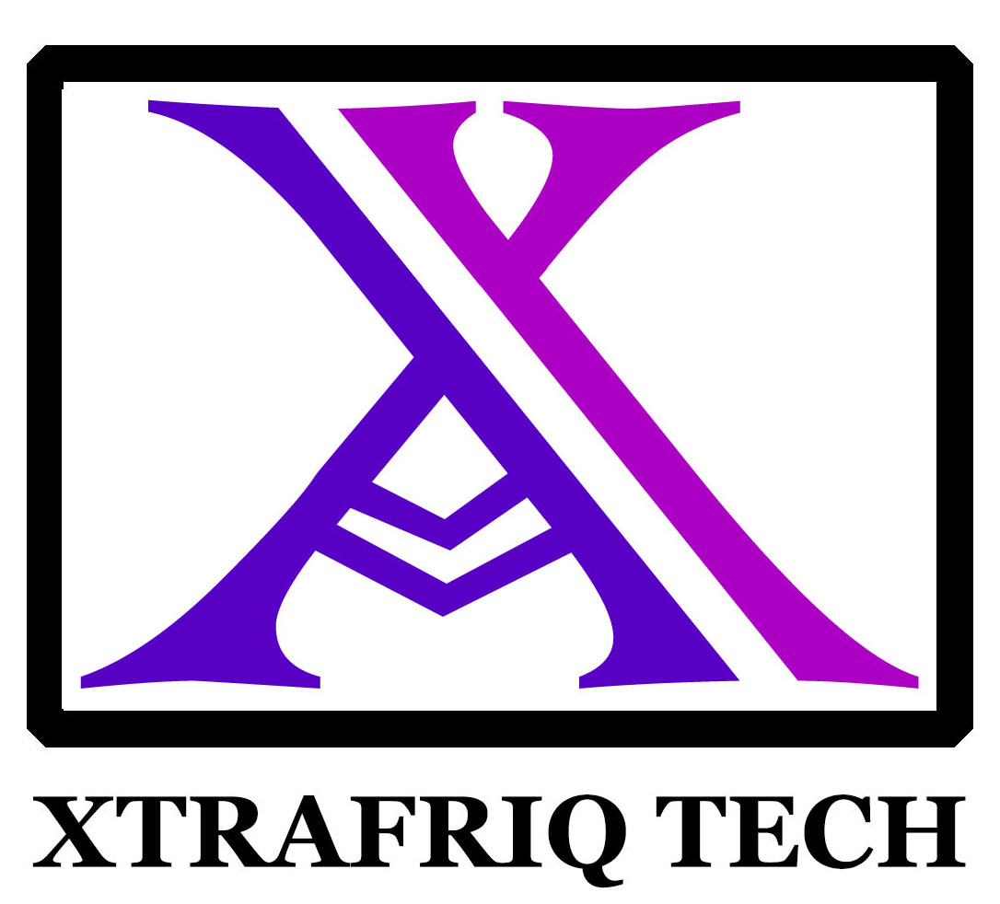

Capability statement
Xtrafriq Tech Consult
Product Management & Technology Consulting Company
Product Management-Led Technology Delivery

We design, build and deliver digital products and technology systems that help organisations operate, grow and scale.
Xtrafriq Tech Consult supports public institutions, development partners, enterprises and growth organisations from Accra, Ghana, with remote delivery worldwide. Work is led by product and project management, then executed through engineering, security and cloud practice so that systems reach production and remain operable.
50+ Projects delivered
40+ Clients served
200+ Entrepreneurs trained
Core capabilities
| Service line | What we deliver |
|---|---|
| Product Strategy & Leadership | Discovery, positioning, roadmaps, OKRs and execution leadership that keep delivery aligned to user value and organisational goals. |
| Project Management (Technology + AI) | Scope, milestones, risk and reporting for software and non-software programmes, with tooling and automation to improve predictability. |
| Enterprise & Government Platforms | Operational platforms for transport, logistics, finance and administration, including role-based access, auditability and reporting. |
| Mobile & Web App Development | Production-ready applications with product-led UX, performance, accessibility and maintainable architecture. |
| Cybersecurity & Risk | Threat modelling, secure SDLC, access control and practical risk controls introduced early in delivery. |
| Cloud Architecture & Reliability | Scalable cloud foundations, cost control, observability and reliability practices for growth. |
| Agile Delivery & Enablement | Sprint discipline, QA gates, GitHub workflows and team enablement that increase delivery predictability. |
Differentiators for procurement
- Product Management-Led Technology Delivery—strategy, delivery leadership and engineering in one engagement model.
- Evidence from shipped systems in transport, development programmes, commerce and consumer mobile—not slide-deck concepts.
- Comfortable in regulated and operational environments: booking, logistics, finance dashboards, role-based access and reporting.
- Accra-based with remote worldwide delivery; English-language engagement and reporting.